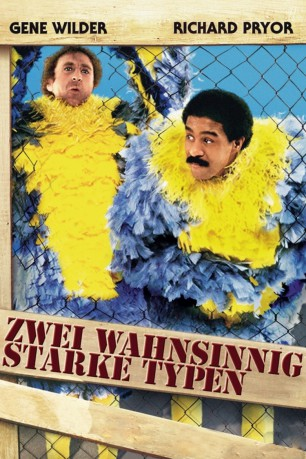
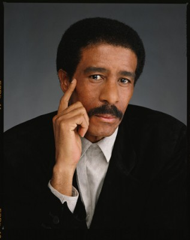

#3581 Zwei wahnsinnig starke Typen
Alternativ: Stir Crazy
 
 IMDB-Wertung: 6.8 / 10
IMDB-Wertung: 6.8 / 10  Metascore: 0
Metascore: 0 
Schauspieler, arbeitslos und ohne einen Penny. Die zwei Pechvögel kehren dem Broadway den Rücken und machen sich auf nach Süden, um Freiheit und Glück zu finden. Mit völlig leeren Taschen bleibt nur eins, sie müsen unterwegs arbeiten. Der Job, für eine Bank als komische Vögel verkleidet, Kunden anzulocken, scheint die Rettung. Aber, vom Pech verfolgt wie sie sind, stehlen Bankräuber ihre Kostüme und rauben so, unerkannt die Bank aus. Dreimal dürfen Sie raten, wer dafür ins Kittchen wandert. Nach diesem furiosen Auftakt folgt ein zwechfellerschütterndes Abenteuer dem anderen. Sie werden Tränen lachen.
Jahr: 1980
Dauer: 111 Minuten
FSK:
Land: USA Studio: Columbia PicturesTonspuren: DD2.0 - ,
Untertitel: Englisch,
Auflösung: 720p (1280x720) Größe: 3993 MB
Genre: Komödie, Krimi
Regisseur: Sidney Poitier
Drehbuch: Heywood Gould
Soundtrack:
Darsteller:
 Gene Wilder als Skip Donahue
Gene Wilder als Skip Donahue-  Richard Pryor als Harry Monroe
- Georg Stanford Brown als Rory Schultebrand
 JoBeth Williams als Meredith
JoBeth Williams als Meredith- Miguel Ángel Suárez als Jesus Ramirez
 Craig T. Nelson als Deputy Ward Wilson
Craig T. Nelson als Deputy Ward Wilson Barry Corbin als Warden Walter Beatty
Barry Corbin als Warden Walter Beatty Nicolas Coster als Warden Henry Sampson
Nicolas Coster als Warden Henry Sampson- Joel Brooks als Len Garber
 Jonathan Banks als Jack Graham
Jonathan Banks als Jack Graham- Erland van Lidth als Grossberger
 Franklyn Ajaye als Young Man in Hospital
Franklyn Ajaye als Young Man in Hospital- Peter Looney als Kicker #1
- Herman Poppe als Alex
- Luis Avalos als Chico
- Rod McCary als Minister
 Grand L. Bush als Big Mean's Sidekick
Grand L. Bush als Big Mean's Sidekick Alvin Ing als Korean Doctor
Alvin Ing als Korean Doctor Gwen Van Dam als Mrs. Beatty
Gwen Van Dam als Mrs. Beatty- Herb Armstrong als County Jail Guard
 Mickey Jones als Guard #8
Mickey Jones als Guard #8- Lee Purcell als Susan
- Tony Burton als Guy who Punches Big Mean , uncredited
 Jim Henry als Rodeo Cowboy , uncredited
Jim Henry als Rodeo Cowboy , uncredited John Richard Petersen als Rodeo Spectator , uncredited
John Richard Petersen als Rodeo Spectator , uncredited- Earl W. Smith als Jack Graham's Enforcer , uncredited
- Brien Varady als Young Inmate , uncredited
- Wendy Wells-Gunkel als Rodeo Guest , uncredited
- Charles Weldon als Blade
- Lewis Van Bergen als Guard #1
- Karmin Murcelo als Teresa Ramirez
- Estelle Omens als Mrs. R.H. Broache
- Cedrick Hardman als Big Mean
- Doug Johnson als Guard #2
 Henry Kingi als Ramon
Henry Kingi als Ramon- Joe Massengale als Caesar Geronimo
- Esther Sutherland als Sissie
- Pamela Poitier als Cook's Helper
- James Oscar Lee als Kicker #2
- Claudia Cron als Joy
 Bill Bailey als Announcer
Bill Bailey als Announcer- Donna Kei Benz als Nancy
- Thomas Moore als Judge
- Danna Hansen als Mrs. Sampson
- Herbert Hirschman als Man at Dinner Party
- Don Circle als Bank Teller
- Madison Arnold als Guard #3
- Gene Earl als Sheriff
- Tracy Lee Rowe als Little Girl
- Essex Smith als Blade's Friend
Datei: X:\1980\Zwei wahnsinnig starke Typen (1980, FSK, 1280x720).mkv seit 06.05.2016
Festplatte: HD 1980-1986
 Es gibt insgesamt 33 Filme in der Gruppe '1980'
Es gibt insgesamt 33 Filme in der Gruppe '1980'